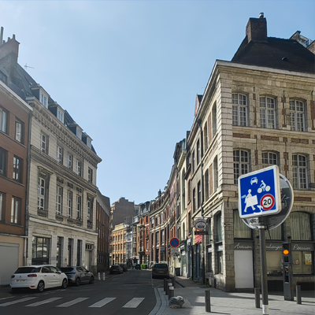

法国没有我想象的热闹,除了图书馆,我到访的大学的图书馆在周末也人满为患;但是有一点和中国大学的图书馆类似,就是大家在座位上有的用电脑工作、有的手绘思路,但没有人真的在图书馆看书架上的书.我所到大学的图书馆的书也不算多,图书馆里书架占地很少,有很多座位和讨论室,但是上架的书都很有代表性.
法国的孩子不少,但是看见有很多独身带孩子的母亲,即使是周末也有,说明很可能在法国社会家庭关系不是那么稳固.至少在其他欧洲国家比如瑞士我看到的都是父母双方一起带孩子.
法国的大学教学仍然很像以前的学徒制,看他们的培养方案,即使是理论性较强的政治学方向的课程,也强调到岗实践(但是获知他们学生人数控制得较少).在中国大学这一点很难展开,因为人数实在太多,而社会工作岗位也很难为匹配学生的实践需求而作出调整并接收那么多学生进行实习(互联网公司要实施得好一些,因为其工作方便模块化和阶段化).
在法国的一大收获是我发现至少在教学上面,方法可以和知识进行脱离,方法有主观性、动态性,知识有客观性、固态性,哪怕是对于文科类的政治学也是如此,这对我之后的教学有启发意义.

法国街景.